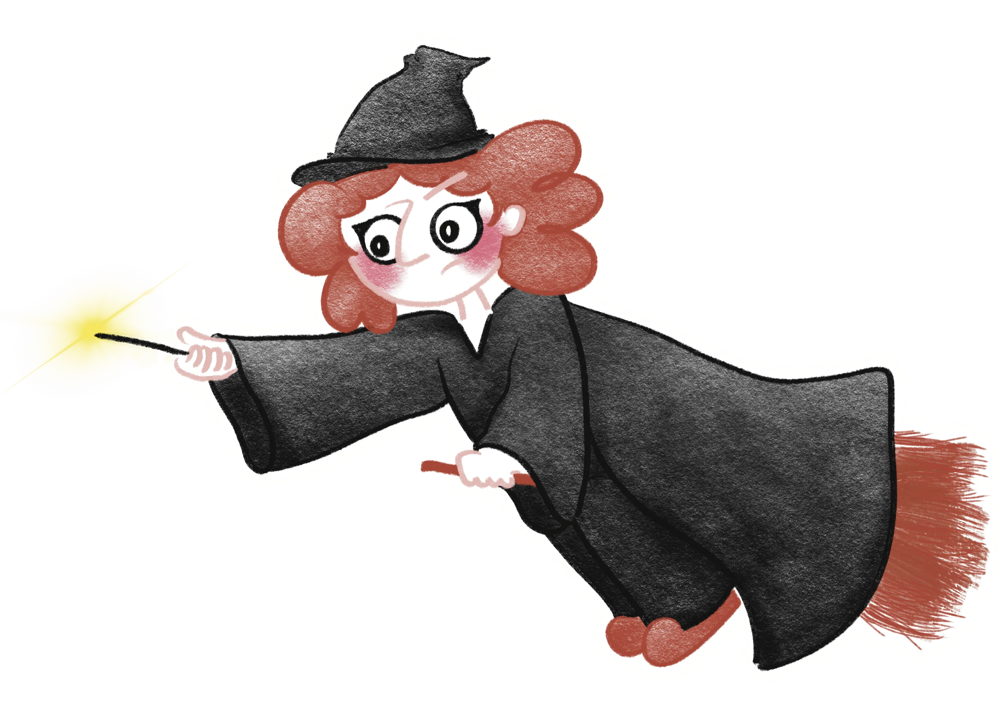
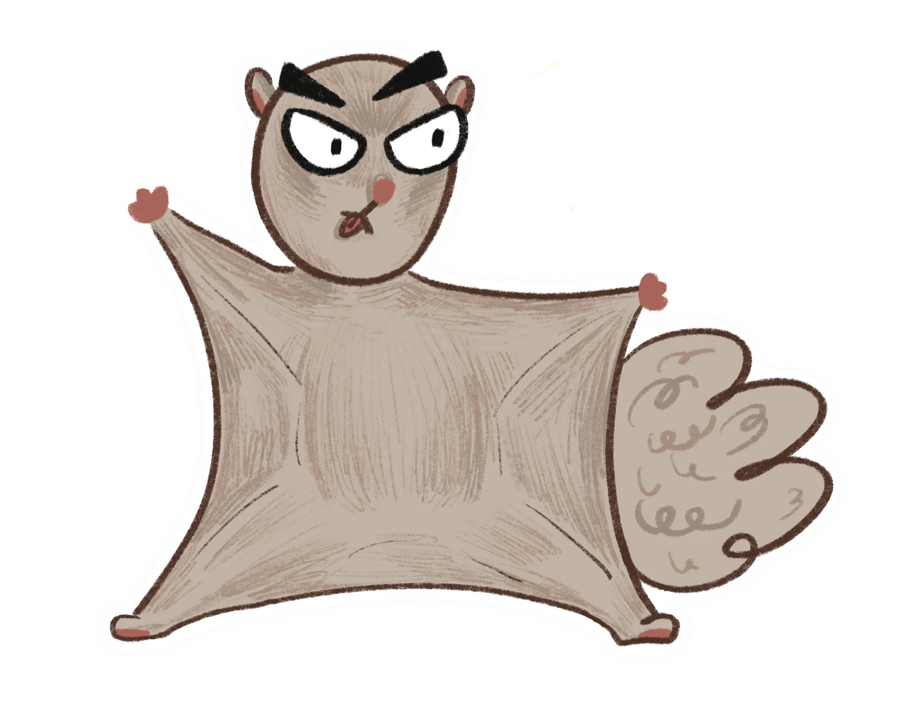

飛鼠逃跑了嗚嗚嗚⁵ ₅

巫師自古以來負責守護文山地區的和平，
將難搞的怪物飛鼠封印在山上，
直到這天⋯⋯
開始遊戲
⬅

飛鼠毫無預警的出現在指南山下！！
如果飛鼠順利逃脫文山封印，
整個台北都將受害！
巫師人呢？！
⬅
原來，
自從前幾天巫師收到一份神秘禮物之後，
便難以抵抗視覺噪音的影響，
把封印咒語弄丟了⋯⋯
該怎麼辦？！
⬅
請依照桌面上的實體關卡說明
過濾視覺噪音
幫助巫師找回咒語！
⬅
闖完所有關卡了嗎？
闖完了！
⬅
噢不！
巫師再次受到視覺噪音攻擊，
需要觀眾幫忙按掉所有視窗才能通關
⬅
輸入四字咒語
送出
咒語似乎不對......
你意外得到一個千載難逢的機會，
木柵居民發現了關於咒語的提示，
要接受提示嗎？
忍痛放棄
當然好！
謎底提示：
政大山上校區的一棟建築物，
飛鼠の大本營！
重新作答
⬅
咒語成功！恭喜成功抓到飛鼠
下一頁
⬅
木柵的一天平安的度過了，
但狡猾的飛鼠又秘密派人送來一樣禮物......
To Be Continue...
製作團隊
回首頁